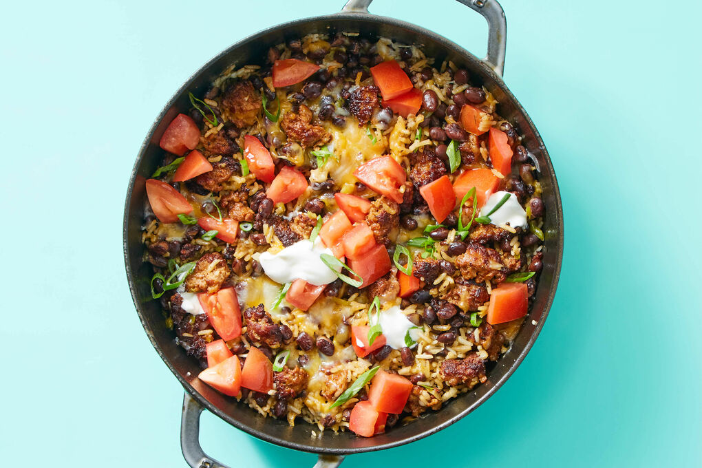

Burrito Bowl

Description
If you're after a fast and filling meal, this Chorizo Burrito Bowl makes and awesome dinner by itself, or served with tortilla chips on the side.
You could even serve this as a burrito, ditching the bowl and using warm tortilla instead. Perfect for a Mexican-themed family night in.
Ingredients
- 2 lbs Chorizo Sausage
- 1 oz Scallions
- 15 oz Black Beans
- 2 Plum Tomatoes
- 10 oz Jasmine Rice
- 2 oz Cheddar-Jack blend (shredded)
- 2 oz Sour Cream
Steps
- Preheat oven to 425ºF with a rack in the center. Heat 2 tablespoons oil in a large ovenproof pot over medium-high heat. Add chorizo and cook, breaking up into smaller pieces, until well browned, about 5 minutes.
- While chorizo cooks, trim ends from scallions and thinly slice, keeping dark greens separate. Drain beans and rinse under cold water. Cut tomato into ½-inch pieces. In a small bowl, stir to combine tomatoes, 2 tablespoons oil, 2 teaspoons vinegar, and a pinch each of sugar and salt. Set aside to marinate, stirring occasionally, until step 4.
- To pot with chorizo, add scallion whites and light greens; cook, stirring, until fragrant, about 30 seconds. Stir in rice and black beans until combined. Stir in 2 cups water, 1 teaspoon salt, and a few grinds of pepper; bring to a boil over high heat. Cover with a lid or foil. Bake on center oven rack until water is absorbed and rice is tender, 20–25 minutes.
- Remove pot with rice from oven; fluff with a fork and season to taste with salt and pepper. Sprinkle all of the cheese over top and cover again. Let sit for 5 minutes to allow cheese to melt and rice to steam. Uncover and spoon marinated tomatoes over top. Serve cheesy chorizo burrito bowl with scallion dark greens and sour cream over top. Enjoy!